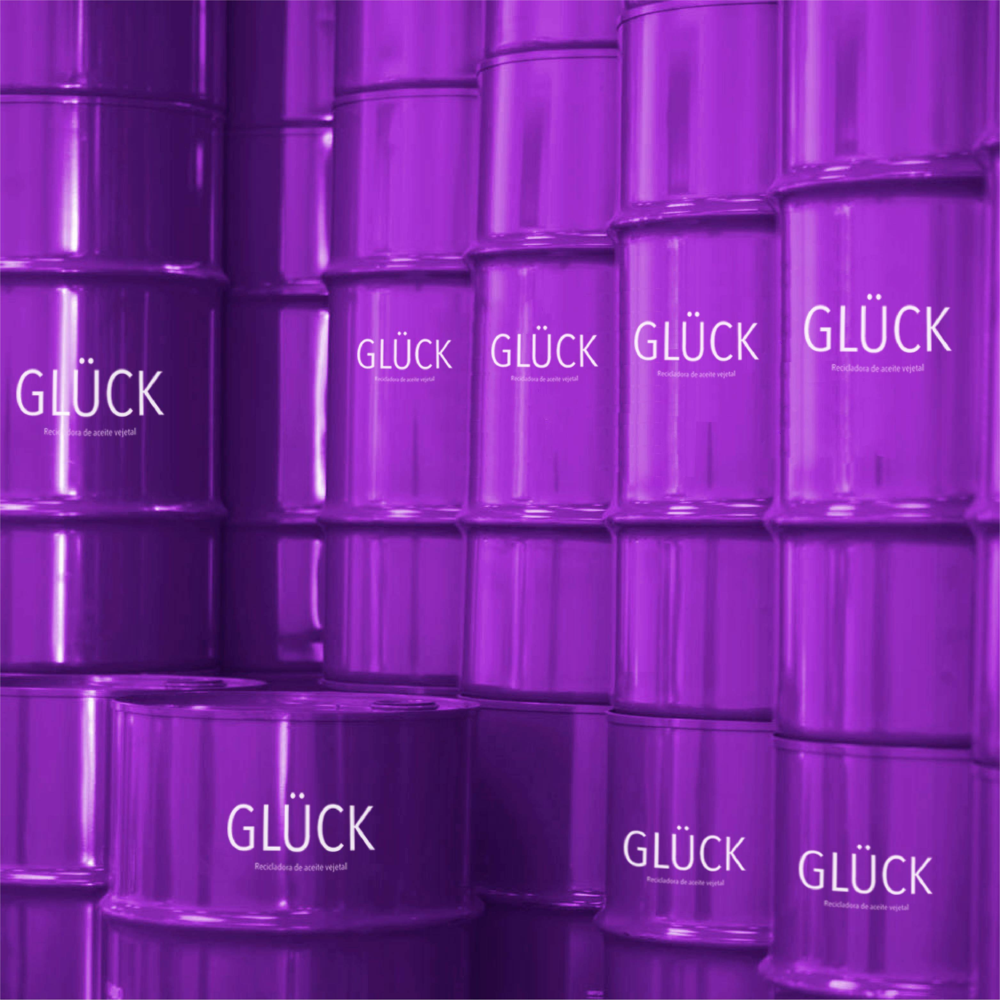
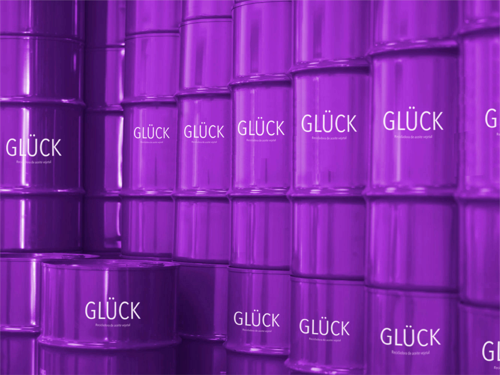
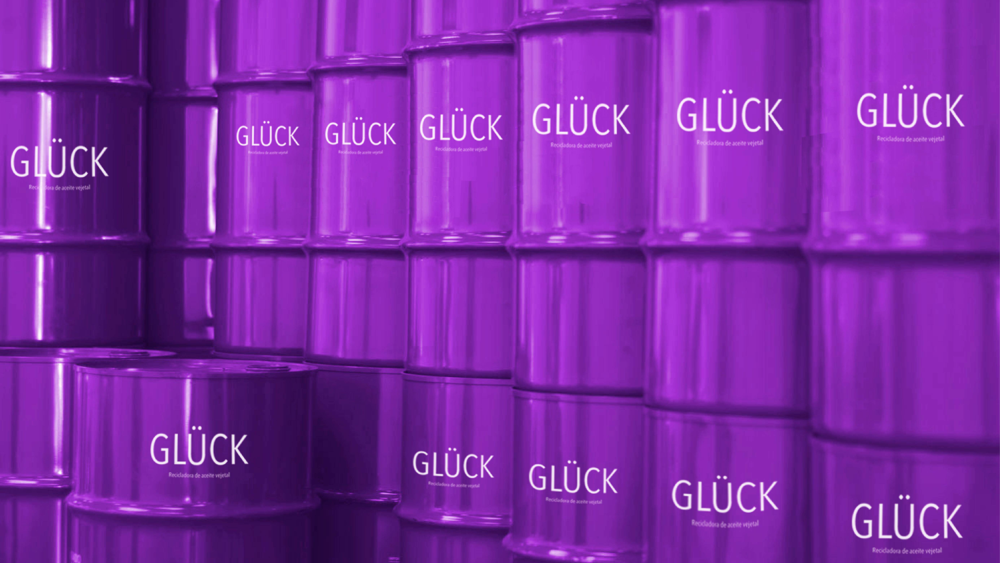

¿Quiénes somos?
Somos una empresa dedicada al reciclaje de aceite vegetal, pues consideramos que nuestra labor impactará de forma positiva en el medio ambiente, disminuyendo la contaminación producida al no reciclarlo. El aceite vegetal lo obtenemos en puntos de reciclaje, para luego convertirlo en biodiesel (por cada 3 litros de aceite reciclado se producen 2 de biodiesel), reduciendo las emisiones en la atmósfera.
Si un tambor puede reciclar 40 litros de aceite vegetal, se generarían 27 litros de biodiesel aproximadamente.